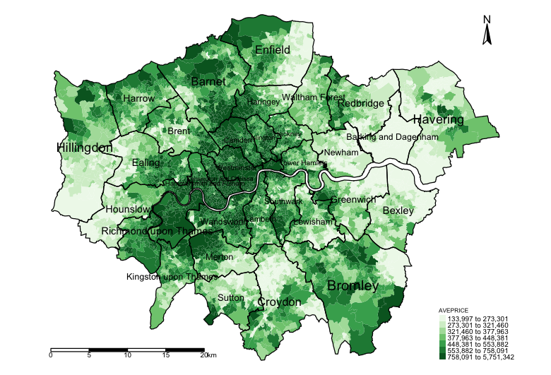
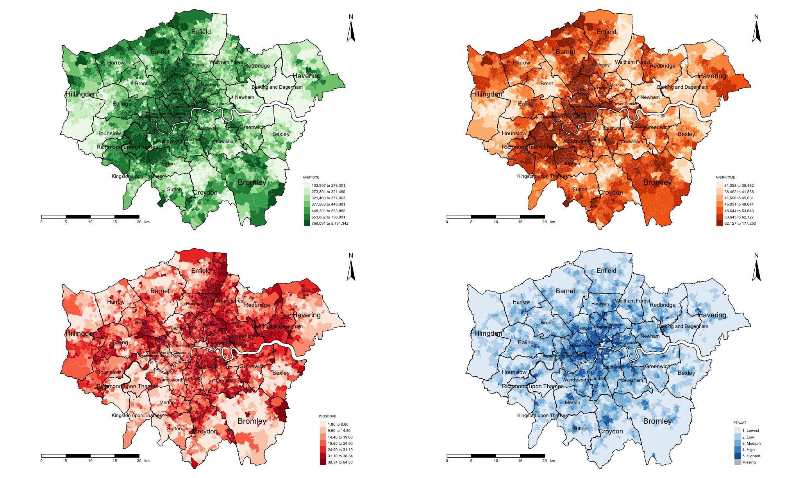
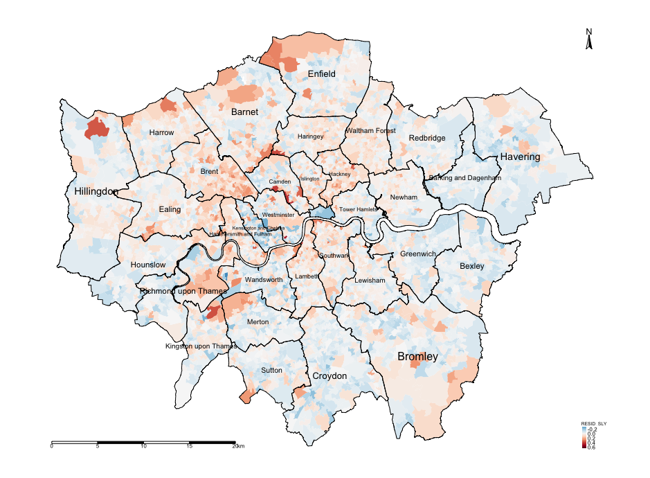
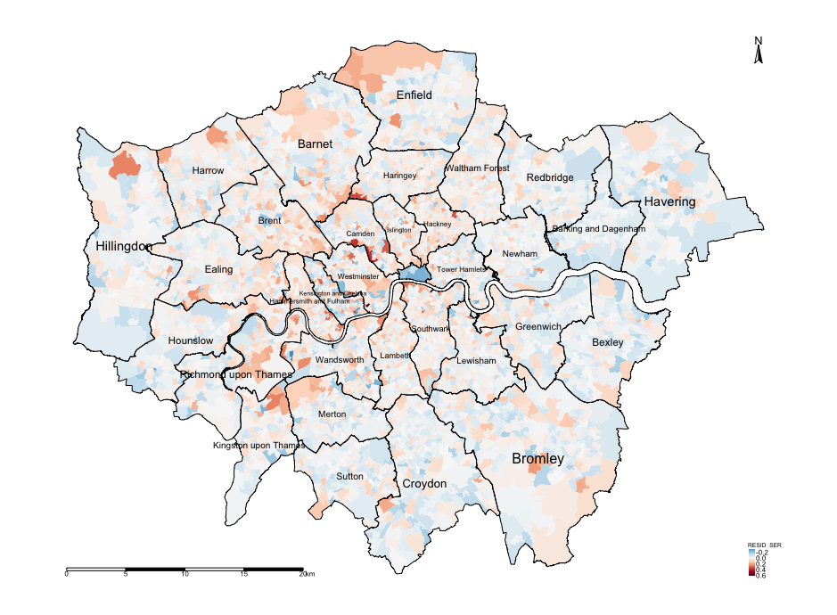

8 Spatial Models: Part 1
8.1 Introduction
8.1.2 Computer practical video (Length: 02:00:01)
This session builds on the techniques taught in week 3’s tutorials focused on spatial dependence & spatial autocorrelation. Today, you will learn how to build spatially-based regression models for dealing with spatial autocorrelation whenever you want to determine relationship between an outcome and other independent variables. These are known as Spatial Lag or Spatial Error regression models.
8.1.3 Learning objective
In this exercise we will be using London’s Lower Super Output Area (LSOA) data from 2015 pertained to house prices (as a dependent variable), and assessing it’s relationship with public transport accessibility (PTA), average income and socioeconomic deprivation (IMD) as independent variables while accounting for spatial autocorrelation.
We will implement three models:
- Multivariable linear regression
- Spatial lag regression
- Spatial error regression
8.1.4 Datasets & setting up the work directory
Before you begin do make sure to download all data by clicking here. Create a folder on called “Week 9” within your “GEOG0114” folder stored in the desktop of your personal computer. Make sure to extract all data from the zip folder and store it into “Week 9” folder. Open a new R script and set the work directory to Week 9’s folder.
For Windows, the work directory will be:
For MAC, the work directory will be:
8.1.5 Loading and installing packages
We will need to load the following packages:
sf: Simple Featurestmap: Thematic Mappingspdep: Spatial Dependence (Weighting schemes & Spatial Statistics)sp: Package for providing classes for spatial data (points, lines, polygons and grids)
# Load packages using library() function
library("sf")
library("tmap")
library("spdep")
library("sp")The above packages sf, tmap, spdep & sp should have been installed in the previous session(s).
We will need to install the following packages:
spatialreg: provides functions for spatial regression modelling.
8.1.6 Loading datasets
Let us first import the quantitative data i.e., London LSOA 2015 data.csv into R/RStudio.
# Use read.csv() to import
datafile <- read.csv(file = "London LSOA 2015 data.csv", header = TRUE, sep = ",")NOTE: The description of the column names are as follows:
| Column Name | Description |
|---|---|
LSOACODE |
Unique identification code for the geographic area |
AVEPRICE (Dependent variable) |
Average house price estimated for the LSOA in 2015 |
AVEINCOME |
Estimated average annual income for households within an LSOA in 2015 |
IMDSCORE |
Deprivation score for an LSOA in 2015 |
PTAINDEX |
Measures levels of access/connectivity to public transport |
PTACAT |
PTAINDEX rendered into a categorical variable |
The above data were sourced from the London DATASTORE. Next, we import the shape files for London (i.e., LSOA- and Borough-level):
- London LSOA shape file:
London LSOA Areas.shp - London Borough shape file:
London Borough Areas.shp
# Use read_sf() function to load shape file
LSOAshp <- read_sf("London LSOA Areas.shp")
BOROUGHshp <- read_sf("London Borough Areas.shp")The code chunk below generates an empty map with the tmap functions. It inspects the spatial configuration of London’s
LSOA with the Boroughs superimposed.
# Generate an empty map to visualise the spatial configuration and hierarchy of LSOA and Boroughs
# First add LSOA layer
tm_shape(LSOAshp) + tm_polygons() +
# Add Borough layer on top of LSOA layer and make it transparent with alpha = 0
tm_shape(BOROUGHshp) + tm_polygons(alpha = 0, border.alpha = 1, border.col = "black") +
# Apply cosmetics by adding compass and scale
tm_compass(position = c("right", "top")) + tm_scale_bar(position = c("left", "bottom"))
8.2 Diagnostics of residuals
8.2.1 Reporting basic summary statistical measures
For any statistical & spatial analysis its always useful to conduct some descriptive analysis of your dataset. You can
obtain basic summary measures using the summary() function which reports the overall result i.e., minimum, maximum, median, mean, 25th and 75th percentile values. For instance, we can report these estimates for the house price variable:
We can see that the mean price across the LSOAs is £528,509 with ranges from £133,997 to £5,751,342. You can also report the standard deviation across all LSOAs using the sd() function. As you can see the result is large and estimated as ±£418,842.5.
NOTE: We have compiled some useful functions for reporting basic measures for descriptive analysis of the fly:
min(): minimummax(): maximummean(): meanmedian(): mediansd(): standard deviation
8.2.2 Reporting the spatial distribution of our variables
Now lets examine the spatial distribution for the house price. First, the LSOA data is stored in datafile which is just a
data frame object. We need to merge this to the spatial object LSOAshp before using the tmap functions. Lets create a
new spatial data frame and name it spatialdatafile
# Merge datafile to LSOAshp uniquely by using "LSOACODE column
spatialdatafile <- merge(LSOAshp, datafile, by.x = "LSOACODE", by.y = "LSOACODE")Lets now generate our first map to inspect the distribution of house prices. We can actually store a picture as an image object called plot1
plot1 <- tm_shape(spatialdatafile) + tm_fill("AVEPRICE", style = "quantile", n = 7, palette = "Greens") +
tm_shape(BOROUGHshp) + tm_polygons(alpha = 0, border.alpha = 1, border.col = "black") +
tm_text("BOROUGHN", size = "AREA") +
tm_compass(position = c("right", "top")) +
tm_scale_bar(position = c("left", "bottom")) +
tm_layout(frame = FALSE, legend.title.size = 0.5, legend.text.size = 0.5)
# plot the image object
plot1
Descriptively, we can observe already an interesting pattern. LSOAs in parts of North, Central and the central West of Inner London tend to have high-priced properties on average exceeding £758,000.00, whereas in parts of Hillingdon, Enfield, Croydon, Bexley, Barking & Dagenham have on average cheaper properties below £273,000.00. We need to take note that the patterns look clustered; however, this descriptive reporting is by no means an evidence-based analysis for assessing clustering or dispersion (i.e., spatial autocorrelation) - a Moran’s I test will be able to diagnosis this problem for house price but when other factors are involved we will need to use the residuals in the Moran’s I test.
Let us visualise three other variables which will subsequently be treated as independent variables in a regression to eyeball whether they are correlated with the house prices. Let us plot maps for income, deprivation and PAT (categories); and then stitch them together by invoking the tmap_arrange() function.
# create 3 separate maps and store them in plot2, plot3 & plot4 objects
# map for income
plot2 <- tm_shape(spatialdatafile) + tm_fill("AVEINCOME", style = "quantile", n = 7, palette = "Oranges") +
tm_shape(BOROUGHshp) + tm_polygons(alpha = 0, border.alpha = 1, border.col = "black") +
tm_text("BOROUGHN", size = "AREA") +
tm_compass(position = c("right", "top")) +
tm_scale_bar(position = c("left", "bottom")) +
tm_layout(frame = FALSE, legend.title.size = 0.5, legend.text.size = 0.5)
# map for socioeconomic deprivation
plot3 <- tm_shape(spatialdatafile) + tm_fill("IMDSCORE", style = "quantile", n = 7, palette = "Reds") +
tm_shape(BOROUGHshp) + tm_polygons(alpha = 0, border.alpha = 1, border.col = "black") +
tm_text("BOROUGHN", size = "AREA") +
tm_compass(position = c("right", "top")) +
tm_scale_bar(position = c("left", "bottom")) +
tm_layout(frame = FALSE, legend.title.size = 0.5, legend.text.size = 0.5)
# map for public transport accessibility categories (PTACAT)
plot4 <- tm_shape(spatialdatafile) + tm_fill("PTACAT", style = "cat", palette = "Blues") +
tm_shape(BOROUGHshp) + tm_polygons(alpha = 0, border.alpha = 1, border.col = "black") +
tm_text("BOROUGHN", size = "AREA") +
tm_compass(position = c("right", "top")) +
tm_scale_bar(position = c("left", "bottom")) +
tm_layout(frame = FALSE, legend.title.size = 0.5, legend.text.size = 0.5)
# stitch the maps together using tmap_arrange() function
tmap_arrange(plot1, plot2, plot3, plot4, nrow = 2)
Visually, the income appears to be strongly correlated with house price. The patterns for socioeconomic deprivation on the other hand appears to have a negative correlation with house price. PTAs relationship is unclear.
8.2.3 Fitting a non-spatial Linear Regression on spatial data & checking the residuals
Next, we are going to fit a linear regression where the response variable is AVEPRICE and the predictors are AVEINCOME,
IMDSCORE and PTACAT, and then extract the residuals from the model in order to test for spatial autocorrelation. When fitting a linear regression - we must test that the residuals have the following properties:
- The residuals should exhibit a normal distribution.
- Residuals must be homoscedasticity and exhibit a constant random when plotted against the fitted prediction
- The residual should not deviate too much away from the index line in the
QQ-plot.
IMPORTANT NOTEs:: Things that can violate the above requirements are:
- A skewed variable. It is best to transform using the
log10()function, or in any scale that’s justifiable to normalise it. if your data is skewed then do a transformation in the models since only care about the residuals. Note that there is no right or wrong when it comes to implementing the transformation, as long as the assumption for the residuals from a linear regression are not violated then all is fine. - If one of these characteristics are violated then its an indication that the data are not independent. This could possibly be due to some data artefact (i.e., a critical error in the data itself), or the residuals being correlated with each other.
- Presence of collinearity between residual points. Here, we should check first by mapping the residuals on a map to examine it’s spatial patterns for clustering and testing it with the Moran’s I test.
Let’s demonstrate by using the built-in function lm() to create a simple linear or multivariable linear regression.
# lm() function builds a regression model and stores model output into the object 'modelMLR'
modelMLR <- lm(log10(AVEPRICE) ~ log10(AVEINCOME) + log10(IMDSCORE) + log10(PTAINDEX), data = spatialdatafile)
# Include the 'scipen=7' argument in the summary() function remove those annoying scientific notation!
options(scipen = 7)
# summary() calls report the output stored in object 'modelMLR'
summary(modelMLR)Call:
lm(formula = log10(AVEPRICE) ~ log10(IMDSCORE) + log10(AVEINCOME) +
log10(PTAINDEX), data = spatialdatafile)
Residuals:
Min 1Q Median 3Q Max
-0.39249 -0.06489 -0.00572 0.06046 0.62993
Coefficients:
Estimate Std. Error t value Pr(>|t|)
(Intercept) -4.100992 0.095592 -42.901 < 2e-16 ***
log10(IMDSCORE) 0.136713 0.007681 17.798 < 2e-16 ***
log10(AVEINCOME) 2.036354 0.019340 105.292 < 2e-16 ***
log10(PTAINDEX) 0.030055 0.004816 6.241 0.000000000471 ***
---
Signif. codes: 0 ‘***’ 0.001 ‘**’ 0.01 ‘*’ 0.05 ‘.’ 0.1 ‘ ’ 1
Residual standard error: 0.1027 on 4964 degrees of freedom
Multiple R-squared: 0.789, Adjusted R-squared: 0.7889
F-statistic: 6189 on 3 and 4964 DF, p-value: < 2.2e-16IMPORTANT NOTES: The above results presented in the above table indicates the relationship between the dependent and independent variable. Under the column for Estimate reports the overall intercept and coefficients for each independent variable. The p-values for the estimates are reported under the column Pr(>|t|) which determines whether the relationship between the dependent and independent variables are statistically significant or not.
Lastly, the other two important pieces of information is the Adjusted R-Squared value and the model’s p-value at the bottom. These tells us the performance of the model in general. The former tells you the percentage of variation explained in the house price when including AVEINCOME, IMDSCORE, PTAINDEX in the regression, while the latter informs us whether if this is significant or not.
HOW TO INTERPRET RESULTS: This is how we fully interpret the coefficients and model performance from the above table:
- On a log transformed scale, if the
AVEINCOMEwas to increase by1.0%, we expect the house prices to increase by2.04%and this average increase is statistically significant since the p-value =0.00000000002<0.05. - On a log transformed scale, if the
PTAINDEXwas to increase by1.0%, we expect the house prices to increase marginally by0.03%. The marginally increase is statistically significant since the p-value =0.000000000471<0.05. - On a log transformed scale, if the
IMDSCOREwas to increase by1.0%, we expect the house prices to increase marginally by0.13%and this average increase is statistically significant since the p-value =0.00000000002<0.05. - In terms of model performance: according to the
Adjusted R-Squaredvalue0.7889 (78.89%)of the variation in the house prices across LSOAs were explained by the model after accounting forAVEINCOME,IMDSCORE,PTAINDEX. Since theAdjusted R-Squaredmore than50.0%it is hence a very good model and significant (i.e., p-value =0.0000000002<0.05).
Now that we have fitted the model, we can extract the residuals and insert them as a new column into the spatialdatafile.
To perform this action, use the modelMLR object and extract the residuals output from it.
# Extract residuals from "modelLMR" object and dump into "spatialdatafile" and call the column "RESIDUALS"
spatialdatafile$RESIDUALS <- modelMLR$residuals
# Reporting basic summary measures to have an idea of its distribution before plotting them on map
summary(spatialdatafile$RESIDUALS)Let us generate a map to examine if these residuals show patterns of spatial autocorrelation. We have divergent values for
the legends (i.e., negative and positive value) therefore it best to specify in the tm_fill() function that style = "cont" and the midpoint = 0, and a divergent colour scheme e.g. Reds to Blue (-RdBu).
tm_shape(spatialdatafile) + tm_fill("RESIDUALS", style = "cont", midpoint = 0, palette = "-RdBu") +
tm_shape(BOROUGHshp) + tm_polygons(alpha = 0, border.alpha = 1, border.col = "black") +
tm_text("BOROUGHN", size = "AREA") +
tm_compass(position = c("right", "top")) +
tm_scale_bar(position = c("left", "bottom")) +
tm_layout(frame = FALSE, legend.title.size = 0.5, legend.text.size = 0.5)
Notice the spatial patterning and clusters of the LSOAs and the over-prediction (i.e., areas that have negative residuals, or blue tones) and under-prediction (i.e., areas that positive residuals, or red tones). This visual inspection of the residuals is telling you that spatial autocorrelation may be present here. This, however, would require a more formal test.
Now, let’s use the Moran’s I test to confirm the presence of spatial autocorrelation. Recall week 3’s lectures and computer labs session on spatial autocorrleation? Here, we create the spatial adjacency matrix and apply the Moran’s I test on the modelMLR object using the lm.morantest() function.
#generate unique number for each row
spatialdatafile$ROWNUM <- 1:nrow(spatialdatafile)
# We need to coerce the sf spatialdatafile object into a new sp object
spatialdatafile_2.0 <- as(spatialdatafile, "Spatial")
# Create spatial weights matrix for areas
Weights <- poly2nb(spatialdatafile_2.0, row.names = spatialdatafile_2.0$ROWNUM)
WeightsMatrix <- nb2mat(Weights, style='B')
Residual_WeightMatrix <- mat2listw(WeightsMatrix , style='W')
# Run the test on the regression model output object "modelMLR" using lm.morantest()
lm.morantest(modelMLR, Residual_WeightMatrix, alternative="two.sided")Global Moran I for regression residuals
data:
model: lm(formula = log10(AVEPRICE) ~ log10(IMDSCORE) + log10(AVEINCOME) + log10(PTAINDEX), data = spatialdatafile)
weights: Residual_WeightMatrix
Moran I statistic standard deviate = 56.28, p-value < 2.2e-16
alternative hypothesis: two.sided
sample estimates:
Observed Moran I Expectation Variance
0.47489527088 -0.00060260241 0.00007138138 You will notice we obtained a statistically significant value (i.e., p-value <0.001) for Moran’s I of value = 0.475. The value of the Moran’s I test somewhat high. This is an indication that the errors (the residuals) are somewhat related to each other and thus not independent. A spatial regression would be much appropriate for modelling this type of data since there’s evidence of spatial autocorrelation.
8.3 Spatial Regression Models
8.3.1 Model formation for spatial lag or error models
At this point, we will introduce two kinds of spatial regressions models that can address the issues of spatial autocorrelation. These models are similar in a sense that they all require the inclusion of a spatial weight matrix to account for the spatial configuration of the areas under investigation.
- Spatial Lag Model lagged on the dependent variable
- Spatial Error Model
Previously, we fitted a linear regression model that’s non-spatial, which takes the mathematical formula as follows:
Here, \(y\) is the response variable (i.e., AVEPRICE). The \(x_{1}\), \(x_{2}\)., etc., are the independent variables (i.e,
\(x_{1}\), \(x_{2}\) & \(x_{3}\) are AVEINCOME, IMDSCORE and PTAINDEX respectively). \(\beta_{1}\), \(\beta_{2}\)., etc., are
the estimated coefficients for the independent variables. The \(\epsilon\) represents the uncorrelated error term.
To make this a Spatial Lag Model lagged on the dependent variable, we tweak the above equation by including the spatial weight matrix \(W\) which is multiplied by the dependent variable \(y\). This product will have an estimated coefficient termed \(\rho\). The \(\rho\) parameter tells us the degree at which our observed outcome inside the study area of interest is influenced by outcomes measured from its neighbours. It’s model formulation is below:
The Spatial Error Model, on the other hand, incorporates spatial weight matrix \(W\) into the error term, where \(\lambda\) is an estimated coefficient for the product between \(W\) and \(u\), which \(u\) is a correlated spatial error term. It’s model formulation is below:
Here, we show you how to implement these two commonly used models to see which one better address the issue of spatial autocorrelation. But there are some important points:
- When implementing these models, we want to ensure that the spatial autocorrelation are accounted for, and therefore, we have to perform the Moran’s I test again. Here, we want to make sure that it is lower than what we observed for the linear regression model.
- We want to also compare the spatial model against the non-spatial model by checking the AIC values, the one with lowest is the better model.
- Previously, we were able to interpret the coefficients for the linear regression model. For the spatial models however,
the coefficients derived from the model lagged on the dependent variable are difficult to interpret. Therefore, we have to
estimate a quantity called
impactswhich we will use in the interpretation. This step is the most crucial part which must be done
8.3.2 Spatial Lag Model lagged on the dependent variable
A Spatial Lag Model on the dependent variable assumes that dependencies exist directly among the levels of the dependent variable. That is, the observed outcome in one primary location is affected by other outcomes in nearby or neighbouring locations. For instance, if we implement this model on the LSOA house price, we are assuming that the property prices in one LSOA is impacted by the property prices from nearby neighbouring LSOAs.
We can perform this analysis in four steps:
- Step 1: Fit the Spatial Lag Model with the dependent variable lagged using the
lagsarlm()function. - Step 2: Use the
summary()function to report the results. Here, we are interested in the \(\rho\) parameter & its p-value. Here, we also want to check if the model is appropriate than a non-spatial model - examine the AIC (for lag versus LM) and the one with the lowest AIC is the better model. - Step 3: Extract the residual lags for the model object and carry out a Moran’s I test using
moran.mc()to ensure that the statistic is less than what was obtained for the Moran’s I test for the linear model. Use thetmapto examine its spatial patterning. - Step 4: Interpretation of the parameters using the
impact()function
STEP ONE
# Fit model using lagsarlm()
# reuse spatial weight matrix created earlier as an object called "Residual_WeighMatrix"
modelSLY <- lagsarlm(log10(AVEPRICE) ~ log10(IMDSCORE) + log10(AVEINCOME) + log10(PTAINDEX), data = spatialdatafile_2.0, Residual_WeightMatrix)STEP TWO
# Report results with summary()
# We are interested in the rho-coefficient, log-likelihood ratio test's p-value and the AIC
summary(modelSLY)Call:lagsarlm(formula = log10(AVEPRICE) ~ log10(IMDSCORE) + log10(AVEINCOME) +
log10(PTAINDEX), data = spatialdatafile, listw = Residual_WeightMatrix)
Residuals:
Min 1Q Median 3Q Max
-0.3608275 -0.0540603 -0.0039772 0.0518209 0.6492007
Type: lag
Coefficients: (asymptotic standard errors)
Estimate Std. Error z value Pr(>|z|)
(Intercept) -2.6649683 0.0924917 -28.8130 < 2.2e-16
log10(IMDSCORE) 0.0435882 0.0068588 6.3551 0.0000000002083
log10(AVEINCOME) 1.2144821 0.0286833 42.3412 < 2.2e-16
log10(PTAINDEX) 0.0106795 0.0041275 2.5874 0.009671
Rho: 0.4522, LR test value: 1354.5, p-value: < 2.22e-16
Asymptotic standard error: 0.012282
z-value: 36.819, p-value: < 2.22e-16
Wald statistic: 1355.6, p-value: < 2.22e-16
Log likelihood: 4937.637 for lag model
ML residual variance (sigma squared): 0.0077091, (sigma: 0.087801)
Number of observations: 4968
Number of parameters estimated: 6
AIC: -9863.3, (AIC for lm: -8510.8)
LM test for residual autocorrelation
test value: 443.54, p-value: < 2.22e-16INTERPRETATION: The \(\rho\) statistic informs us of how the neighbouring LSOA house price values affect the house price at \(y\). The \(\rho\) value is a positive value of 0.4522 which means the neighbouring LSOAs affect is a positive manner, and it is statistically significant (i.e., p-value < 0.05). We can see the AIC for the lag model is lower than the original linear regression model (i.e., Lag: -9863.3 vs LM: -8510.8) therefore the lag model is okay.
IMPORTANT NOTE: In a lag model, do not even try to interpret the coefficients for the independent variables - ignore them and their p-values… they are nonsense! Why? This is because there is a global feedback effect happening here - i.e., whenever we change something in our own region (i.e., LSOA) for instance, like the AVEINCOME in a LSOA, that will not only affect our own house price, but when it causes the house price to go up in its own area, this in turn will cause the house prices to increase in its neighbour’s area; and when the neighbour’s house price go up - it is again going to affect our house price… so its an infinite loop. Instead, we interpret the result churn out from the impact function which reports their direct and indirect effects.
STEP THREE
# extract the residuals for modelSLY object and dump back to original sf spatialdatafile object
spatialdatafile$RESID_SLY <- modelSLY$residuals
# use Moran's I test using moran.mc() function
moran.mc(spatialdatafile$RESID_SLY, Residual_WeightMatrix, 1000, zero.policy = T)Monte-Carlo simulation of Moran I
data: spatialdatafile$RESID_SLY
weights: Residual_WeightMatrix
number of simulations + 1: 1001
statistic = 0.13417, observed rank = 1001, p-value = 0.000999
alternative hypothesis: greaterINTERPRETATION: The Moran’s I from the original model was 0.4748. Here, it is 0.1341 which is much lower thus the lag model has accounted for a lot of spatial autocorrelation although it still significantly remains. We can conclude that spatial lag model does address some of the issues of spatial autocorrelation in the model’s residuals but not all since it significantly positive. This is evidenced in the map output of the residual lags.
IMPORTANT NOTE: We have to make a mental note of this and compare it with the performance of the Spatial Error Model.
# generate the map
tm_shape(spatialdatafile) + tm_fill("RESID_SLY", style = "cont", midpoint = 0, palette = "-RdBu") +
tm_shape(BOROUGHshp) + tm_polygons(alpha = 0, border.alpha = 1, border.col = "black") +
tm_text("BOROUGHN", size = "AREA") +
tm_compass(position = c("right", "top")) +
tm_scale_bar(position = c("left", "bottom")) +
tm_layout(frame = FALSE, legend.title.size = 0.5, legend.text.size = 0.5)
STEP FOUR
# Interpretation of results using impacts
# impacts
Weights_2.0 <- as(Residual_WeightMatrix, "CsparseMatrix")
trMC <- trW(Weights_2.0, type="MC")
summary(impacts(modelSLY, tr = trMC, R=100), zstats=TRUE)Impact measures (lag, trace):
Direct Indirect Total
log10(IMDSCORE) 0.04550352 0.034066675 0.07957020
log10(AVEINCOME) 1.26784902 0.949188065 2.21703709
log10(PTAINDEX) 0.01114883 0.008346682 0.01949551INTERPRETATION: Here is where we derive meaningful interpretation of the coefficients. A big table is churned out - all we care about is the first table titled: Impact Measures (lag, trace): and the last table titled: Simulated p-values. For instance, let’s interpret the log10(AVEINCOME)(on the log-scale), for the direct effects in its own LSOA, if the levels of income were to increase by 1%, this will cause an increase in the property prices by 1.267% (p < 0.05) in its own LSOA. But for the indirect affects, if the log10(AVEINCOME) were to change across neighbouring LSOAs, this will affect the value of our house prices by 0.949% (p < 0.05). The total column is the combined effect.
8.3.3 Spatial Error Models
In a Spatial Error Model, we assume that the error terms are correlated across observations (i.e., the error of an observed value affects the errors of its neighbors).
We essentially repeat the first 3 steps highlighted in section 3.2. for this analysis:
- Step 1: Fit the Spatial Error Model using the
errorsarlm()function. - Step 2: Use the
summary()function to report the results for the \(\lambda\) parameter and it’s p-value to check if the model is appropriate than a non-spatial one. You can also check with the AIC. - Step 3: Extract the residuals errors and carry out a Moran’s I test using
moran.mc()to ensure that the statistic is less than what was obtained for the Moran’s I test for the linear model. Use thetmapto examine its spatial patterning.
STEP ONE
modelSER <- errorsarlm(log10(AVEPRICE) ~ log10(IMDSCORE) + log10(AVEINCOME) + log10(PTAINDEX), data = spatialdatafile_2.0, Residual_WeightMatrix)STEP TWO
# Report results with summary()
# We are interested in the rho-coefficient, log-likelihood ratio test's p-value and the AIC
summary(modelSER)INTERPRETATION: The \(\lambda\) statistic informs us that if there’s a sudden change in the error term for house prices in neighbouring LSOAs how did it impact the error term for the house price in our LSOA at \(y\). The \(\lambda\) value is a positive value of 0.7221 which means the affect of neighbouring LSOAs are positive and the impact is statistically significant (i.e., p-value < 0.05). We can see the AIC for the error model is lower than both the original linear regression & lag model (i.e., Error: -10705.3 vs LM: -8510.8 & Lag:-9863.3) therefore the error model better than the two.
IMPORTANT NOTE: Unlike the lag model, we can interpret the coefficients from the error model for the independent variables! We can interpret them the same way we did for the linear regression model (see section 7.3.3.).
STEP THREE
# extract the residuals for modelSLY object and dump back to original sf spatialdatafile object
spatialdatafile$RESID_SER <- modelSER$residuals
# use Moran's I test using moran.mc() function
moran.mc(spatialdatafile$RESID_SER, Residual_WeightMatrix, 1000, zero.policy = T)INTERPRETATION: The Moran’s I from the original model was 0.4748. Here, it is -0.0579 which is negative and the lowest for the error model. On top of that there is no evidence of spatial autocorrelation since its p-value is not significant. Therefore, we can conclude that the spatial error model does address the issue of spatial autocorrelation in the residuals. Its a better model than the Linear regression and Lag model for exploring the relationship with those independent variables and accounting for spatial autocorrelation. This is also evidenced in the map output of the residual errors.
# generate the map
tm_shape(spatialdatafile) + tm_fill("RESID_SER", style = "cont", midpoint = 0, palette = "-RdBu") +
tm_shape(BOROUGHshp) + tm_polygons(alpha = 0, border.alpha = 1, border.col = "black") +
tm_text("BOROUGHN", size = "AREA") +
tm_compass(position = c("right", "top")) +
tm_scale_bar(position = c("left", "bottom")) +
tm_layout(frame = FALSE, legend.title.size = 0.5, legend.text.size = 0.5)
8.3.4 Using a Spatially lagged model based on independent variables
The code below computes the spatially lagged model based on the independent variables. Briefly, the results are a quite tedious to interpret directly from the regression model. Hence, you will want to use the post estimation impacts() to get the direct, indirect and total coefficients from model:
8.4 References (see reading list)
- Paper: Guangqing Chi and Jun Zhu (2008) Spatial Regression Models for Demographic Analysis, Popul Res Policy Rev, 27:17-42. DOI 10.1007/s11113-007-9051-8
- Book Chapter: David Darmofal, (2015), Chapter Six: Spatial Lag and Spatial Error Models (2015). Social Analysis for the Social Sciences. Cambridge Press Gain Access to PDF via Institutional login
- Paper: Wen-Ching Wang, Yu-Ju Chang & Hsueh-Ching Wang, (2019), An Application of the Spatial Autocorrelation Method on the Change of Real Estate Prices in Taitung City. Int Jour Geo-Information, (8)249, doi:10.3390/ijgi8060249
- Online Tutorial: [R Programming] Reka Solymosi and Juanjo Medina (2022) Crime Mapping in R, Chapter 9: Spatial Regression Models Click link
8.5 Data Sources
- English indices for Multiple Deprivation (IMD) for 2019 [Source: UK Gov] Click Here
- UK Shape files for different geographic units [Source: Office for National Statistics, Open Geography Portal] Click Here
- The following indicators for averaged house prices, income and PTAL estimates were obtained from London DATASTORE